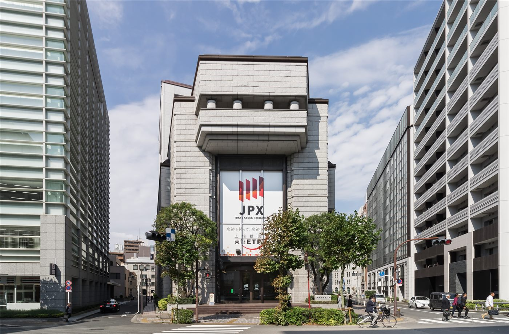

미·일 금리 회의 주간… 시장은 세 갈래 시나리오
이번 주 미국과 일본의 통화정책 회의가 잇따라 열린다. 아시아 증시는 결과에 따른 세 가지 시나리오를 놓고 대응을 준비하고 있다.
형덕창 기자 · 2026.09.21
橋경제·문화·스포츠

미국 연방공개시장위원회(FOMC)와 일본은행 금융정책결정회의가 이번 주 잇따라 열린다. 두 회의 결과에 따라 아시아 증시의 방향이 갈릴 수 있다는 전망이 나온다.
광고 문의 · 300×250시장에서는 미국의 결정을 동결·인하·인상 세 갈래로 나눠 대응 시나리오를 짜고 있다. 각 경우에 따라 환율과 금리 곡선의 반응이 달라지기 때문이다.
미국 대통령은 회의를 앞두고 미국의 금리가 세계에서 가장 낮아야 한다는 취지의 발언을 내놨다. 통화정책의 독립성을 둘러싼 논의가 다시 거론되는 배경이다.
일본은행 회의에서는 물가 흐름과 엔화 가치가 주요 판단 요소로 꼽힌다. 정책 변경 여부보다 회의 후 설명의 표현 변화에 관심이 모인다는 분석도 있다.
대만 증시에서는 반도체 업종의 비중이 커서, 금리 결정이 기술주 밸류에이션을 통해 지수에 반영되는 경로가 뚜렷하다.
한국 증시도 비슷한 구조를 갖고 있다. 다만 환율 민감도가 상대적으로 커서, 금리 결정보다 자금 흐름의 방향이 지수에 먼저 반영되는 경우가 있다.
회의 결과는 예측의 영역이며, 개별 투자 판단의 책임은 투자자 본인에게 있다. 본지는 특정 종목이나 매매 시점을 권하지 않는다. (자료: 연합보 등)